Freestanding post platform around a single tree · 8′×8′ · 15° slope · NJ
Drawings are dimensioned planning set — verify on site. Pressure-treated lumber throughout.
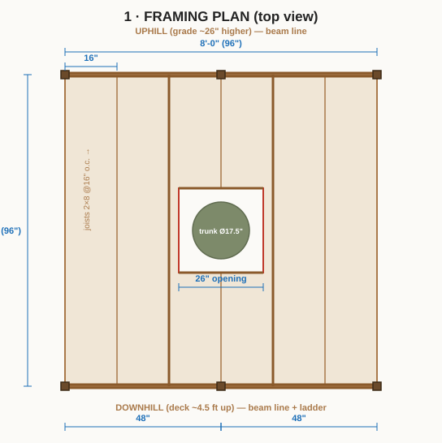
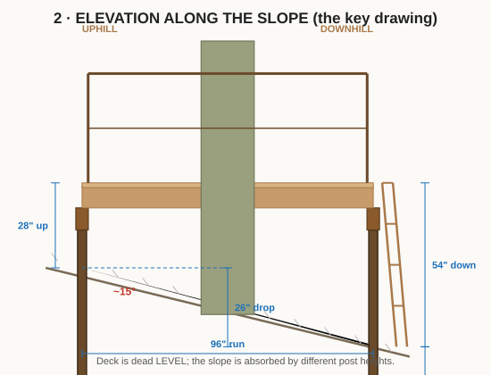
The deck is dead level; the slope is absorbed entirely by different post heights.
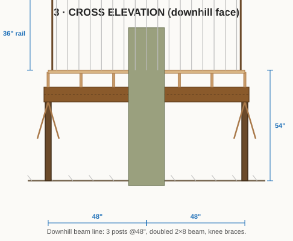
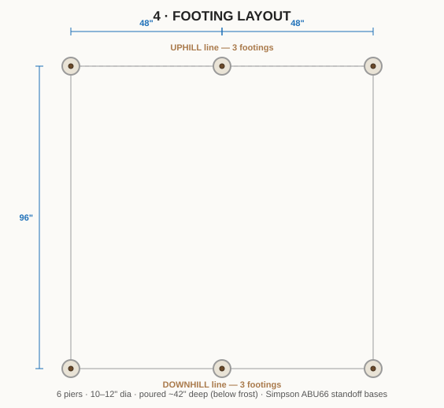
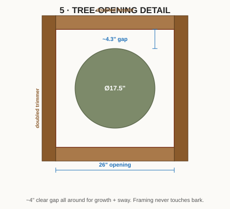
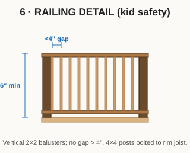
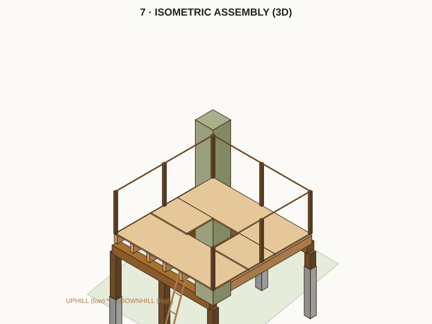
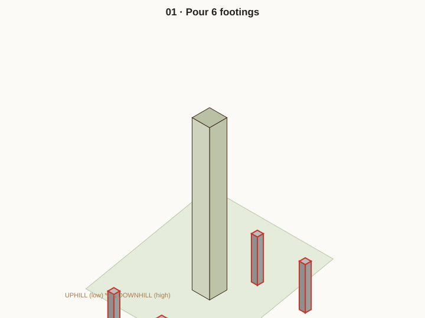
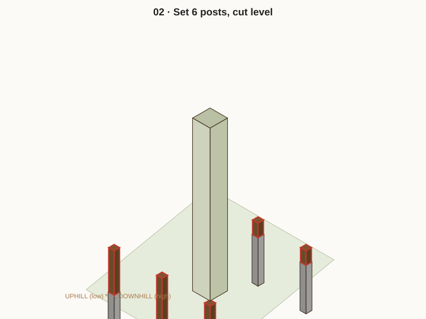
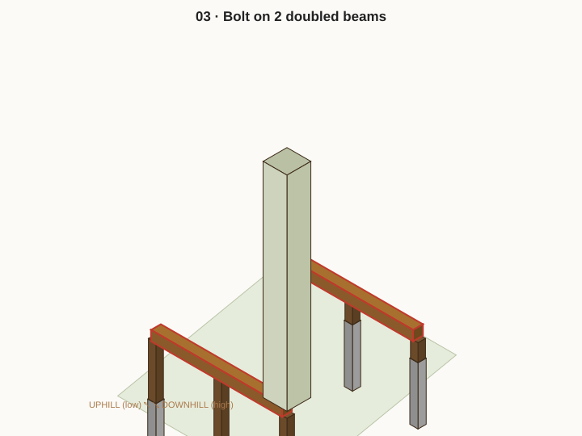
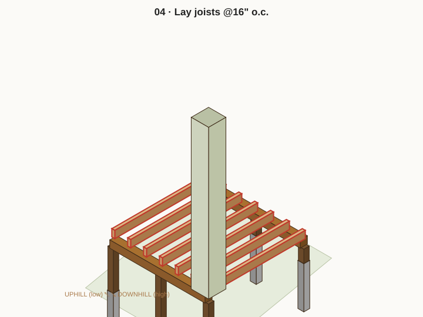
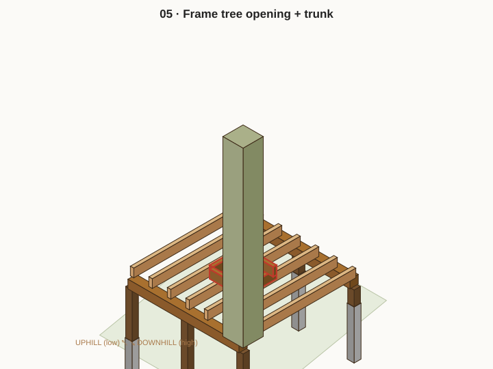
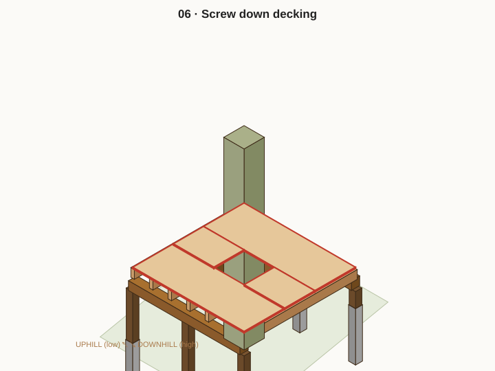
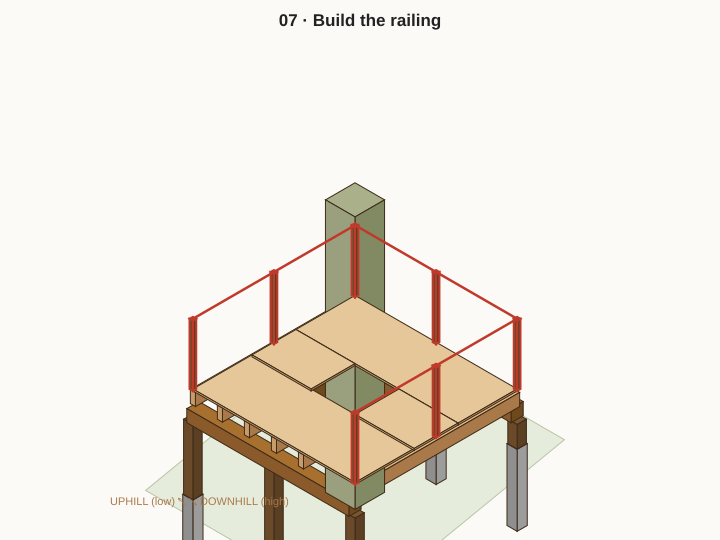
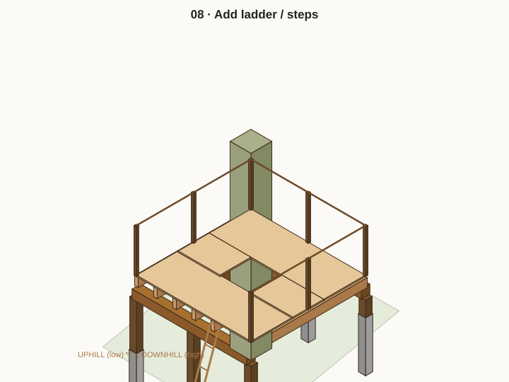
| Item | Spec | Qty | Notes |
|---|---|---|---|
| Posts | 6×6 PT, 8 ft | 6 | Cut to a level line |
| Beams | 2×8 PT, 8 ft | 4 | Two doubled beams |
| Joists | 2×8 PT, 8 ft | 11 | + doubling at opening |
| Knee braces | 4×4 PT, 8 ft | 2 | Cut to 45° braces |
| Decking | 5/4×6 PT, 8 ft | 20 | 64 sq ft + waste |
| Rail posts | 4×4 PT, 8 ft | 4 | ~48″ each |
| Rails | 2×4 PT, 8 ft | 8 | Top + bottom |
| Balusters | 2×2 PT, 8 ft | ~12 | <4″ gaps |
| Concrete | 60 lb bags | ~15 | 6 piers ~42″ deep |
| Tube forms | 10–12″ Sonotube | 6 | |
| Post bases | Simpson ABU66 | 6 | Standoff, in wet concrete |
| Joist hangers | Simpson LUS28 | ~24 | + hanger nails |
| Carriage bolts | ½″ × 8″ | ~20 | Beams to posts |
| Screws | structural + deck | — | GRK/SDWS + coated deck |
Rough total $700–1,100 depending on PT prices. Verify post lengths on site after footings cure.